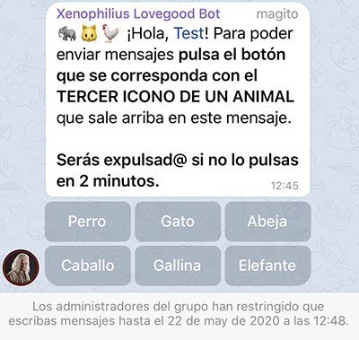

@XenophiliusLovegoodBot
Help group: @kingcasualbotayuda
Donors
The bot can continue to work thanks to donations from people who help from Patreon.
If you make a donation you can make the groups of which you are the creator become premium for a certain time.
Honor Ball
Zeldabalca, Tina Arroyo, ChampPs and LucasOnrubia

Ultra Ball
SurbitonTolworthPoGo
Documentation for users
1. Events
The main functionality available in groups and channels is an event list which can be requested with the command /events or writing event list.
A notification is also sent when an event begins or ends.
Event channels:
- Europe/Madrid: @eventoswuspain | Twitter
Documentation for admins
1. Settings
To access the bot's settings put the command /settings@XenophiliusLovegoodBot.
1.1. Enable or disable the bot
Allows you to enable or disable the bot. When disabled, the following remains active:
- Commands only available to administrators.
- Anti Spam
- Press button to talk
- Welcome message
1.2. General settings
1.2.1. Delete friend codes
With this option messages containing friend codes will be deleted. Screenshots are included (except for oddly cropped ones).
You can put a message when Xenophilius Lovegood Bot deletes a friend code using the command /fctextxeno followed by the message you want to put.
To delete the message put /fctextxeno -.
To get the current message use the command /getfctextxeno.
1.2.2. Anti Spam
Xenophilius Lovegood Bot will delete spam messages and ban the member who sent the message.
1.2.3. Press button to talk
With this option when a new member enters the group he/she will have to answer a question by pressing a button. The message has a delay of 1 second so that in the case of having another bot with a welcome message, it's displayed first.
If you've a welcome message configured with another bot and you want to use this option, it's better to configure the welcome message with Xenophilius Lovegood Bot as it would only show it if the new member presses the correct button.
1.3. Events
If you've not activated the events, it'll ask you to activate it. After doing this (or if you already had them enabled), you can enable or disable the command /events, the daily notification (at 8:45 am) with the event list or notifications when an event begins or ends.
To be able to modify these settings the group must have at least 16 members.
1.4. Timers
Allow some messages to be deleted after the specified time.
1.5. Nightly notifications
It allows to configure the behavior of some messages that are sent from 1:00 to 7:59.
✅: send with sound
üîá: send without sound
❌: don't send
1.6. Time zone
Allows you to change the group's time zone. This is used to receive notifications of events and alerts at the correct time.
1.7. Language
Allows you to change the language of the bot.
2. Buttons
Buttons can be included in alerts, message when deleting a friend code and welcome message.
You also can use the command /xenobuttons so that the bot returns a message with buttons.
Format:
"Button text" = "https://link.com"
To put more than one button in the same row, put a comma. Example:
"Text 1" = "https://link1.com", "Text 2" = "https://link2.com"
Example:
Text
"Button text" = "https://link.com"
3. Alerts
You can send messages periodically. There is a limit of 10 alerts and they're configured with the command /alertxeno.
Command example:
/alertxeno 1 2019/10/14-12 3 10-18 Alert text
Help:
1: alert number (can be a number between 1 and 10)
2019/10/14-12: reference date with the format: year/month/day-hour
3: frequency in hours with which the alert is repeated
10-18: time period in which the alert is sent
3.1. Pin an alert
If you want Xenophilius Lovegood Bot to pin the alert it sends you can use the parameters pinnotify (notifies group members) or pin.
Example: /alertxeno 1 2019/10/14-12 3 10-18 pinnotify Alert text.
3.2. Get an alert
If you've an alert and want to edit it you can get the content of the alert (what you put with the command /alertxeno). To do this use the command /getalert followed by the alert number. Example: /getalert 1
If you want to see all the group's alerts write /getalert all.
3.3. Delete an alert
To remove an alert, write the command /alertxeno followed by the alert number and then -. Example: /alertxeno 1 -.
4.1 Image in alerts [PREMIUM]
Instructions for adding an image to an alert:
- Send an image to the group.
- Quote the image and put the following command: /alertimagexeno #
Instructions for deleting an image from an alert:
- Write: /alertimagexeno # -
In both cases # refers to the alert number.
4. Welcome message
To add a welcome message use the command /welcomexeno followed by the welcome message.
Example: /welcomexeno Hello mage.
To delete the welcome message put /welcomexeno -.
To check the current welcome message put /getwelcomexeno.
4.1 Image in welcome message [PREMIUM]
Instructions for adding a welcome image:
- Send an image to the group.
- Quote the image and put the following command: /welcomeimagexeno
Instructions for deleting a welcome image:
- Write: /welcomeimagexeno -
5. HTML tags in messages
HTML tags can be added in alerts, message when deleting a friend code, welcome message and with the command /xenobuttons.
Tags:
- Bold: <b>text</b>
- Italics: <i>text</i>
- Underline: <u>text</u>
Strikethrough:<s>text</s>Monospace:<code>text</code>
6. Text substitution in messages
Text substitution can be done in message when deleting a friend code and welcome message.
Tags:
- New member's name: {user_name}.
- New member's id: {user_id}.
- New member's name and id: {user_name_id}.
- Group name: {chat_title}.
Premium groups
If you make a donation from Patreon you can make the groups of which you are the creator become premium for a certain time.
Advantages of premium groups:
- Extra priority when receiving events.
- Be able to activate events in groups with few members.
- 25 alerts can be configured instead of 10.
- An image can be set in the welcome message.
Tables with info
Below are some tables with additional info about the bot.
1. Features
Legend:
✅: available
❌: not available
?: disabled by default
+XXü뮂Äçüë©‚Äçüëß‚Äçüë¶: only groups with +XX members
| Feature | Private | Groups |
|---|---|---|
| Event command | ✅ | ? +16ü뮂Äçüë©‚Äçüëß‚Äçüë¶ |
| Daily notification (events) | ❌ | ? +16ü뮂Äçüë©‚Äçüëß‚Äçüë¶ |
| Notification of event started/finished | ❌ | ? +16ü뮂Äçüë©‚Äçüëß‚Äçüë¶ |
| Commands | ✅ | ? |
| Settings | ❌ | ✅ |
| Alerts | ❌ | ✅ |
| Delete friend codes | ❌ | ? |
| Anti Spam | ❌ | ? |
| Press button to talk | ❌ | ? |
| Welcome message | ❌ | ✅ |
2. Required permissions
If the group has slow mode activated, it's highly recommended that you add the bot as an admin so that time restrictions are not applied when sending messages.
| Feature | Permissions |
|---|---|
| Event command | Delete messages (recommended) |
| Daily notification (events) | - |
| Notification of event started/finished | - |
| Commands | - |
| Settings | Delete messages (recommended) |
| Alerts | - |
| Pin alerts | Pin messages |
| Delete friend codes | Delete messages |
| Anti Spam | Delete messages, ban users |
| Press button to talk | Delete messages (recommended), ban users |
| Welcome message | - |
F.A.Q.
1. How do I avoid spam?
The bot has 2 options to avoid spam:
The first one is used to ban accounts that are already in the group and send a message that the bot considers as spam.
The second one is to prevent spamming accounts from staying in the group. In real-life use cases this option is the most effective since the anti spam filter may not be triggered.
Usage Policy
Only users or groups who follow Niantic Terms of Service can use the bot.
If these conditions are breached, the user or group could be banned from being able to use the bot (usually permanently).